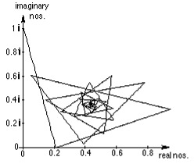
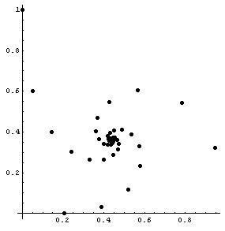
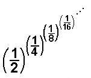
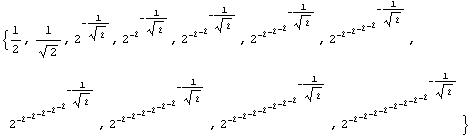
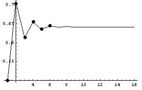
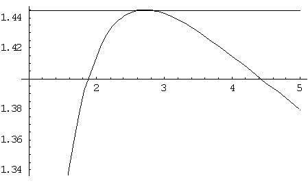

in the
following ways in Mathematica with the help of Theo Gray:
in the
following ways in Mathematica with the help of Theo Gray:Don's work on polypowers
Don, without realizing at the time what it was
called, had done work on polypowers in his worksheet book in chapter 11. He
found in the
following ways in Mathematica with the help of Theo Gray:
N[i^i,10]
0.20788 +0i (which is 0.20788 ; so i i turns out to be a real number!) can you prove that?
N[i^(i^i),10]
0.947159 +0.320764 i
N[i^i^i,10]
0.947159 +0.320764 i
N[i^(i^(i^i)),10]
0.0500922 +0.602117 i
g[x_]= i^x (defines the function)
N[NestList[g,1,2],10] (NestList tells the computer to iterate the function g or i^x, start with 1 in for x, do 2 iterations and write the answer to 10 digits. We get as an output i, i^i and i^i^i or {0. +1. i, 0.20788 +0 i, 0.947159 +0.320764 i}
N[NestList[g,1,20],10]
(iterate the function 20 times)
{0. +1. i, 0.20788 +0i, 0.947159
+0.320764 i,
0.0500922 +0.602117 i, 0.387166
+0.0305271 i,
0.782276 +0.544607 i, 0.142562
+0.400467 �,
0.519786 +0.118384 i, 0.568589
+0.605078 �,
0.242365 +0.301151 i, 0.578489
+0.23153 �,
0.42734 +0.548231 i, 0.330967
+0.262892 �,
0.574271 +0.328716 i, 0.369948
+0.468173 i,
0.400633 +0.26312
i, 0.534744
+0.389328 i,
0.362114 +0.403964 i, 0.446697
+0.285567 i,
0.487696 +0.412175 i, 0.37717
+0.362866 i}
It doesn't look like there is a pattern here, but If we take it out 120 terms and look at the last 2
Take[N[NestList[g,1,120],10],-2] , we get
{0.438284 +0.360593 i, 0.438282 +0.360593 i}
If we graph this sequence and connect the points, we get
ListPlot[Map[{Re[#],Im[#]}&,N[NestList[g,0+1,100]]],
PlotJoined->True,PlotRange->All,AspectRatio�Automatic];

we can see that it converges in a spiral, to about 0.438282 + 0.360593 i .
If we don't connect the points, by taking out the PlotJoined->True,
ListPlot[Map[{Re[#],Im[#]}&,N[NestList[g,0+I,100]]], PlotRange->All,
AspectRatio� Automatic,Prolog�AbsolutePointSize[5]];

We get what looks like 3 spirals converging at the same point! The complex numbers in the sequence go from one spiral to the second spiral, then to the third spiral, then back to the first spiral, and so on as the sequence converges.
Some time after Don put this on his website , IES, the java applet -making site in Japan found this page and asked to use this idea. They made a great java applet in which you can start with any point on the complex plane, do the powers of that point or complex number, and see whether the sequence converges or diverges, by graphing it like that above. It's in color, blue if it converges, red if not, and yellow if they don't know- and the result is a fractal!
When Geoffrey started with his
polypowers, Don
did the following polypowers of  below
below
g[x_]=(1/2)^x
2-x
N[NestList[g,1/2,15],20]
{0.50000000000000000000, 0.70710678118654752440, 0.61254732653606592463, 0.65404086004206947198, 0.63549784581337376987, 0.64371864172286913077, 0.64006102117723968592, 0.64168580704299834213, 0.64096353717796321197, 0.64128450906658501514, 0.64114185147173778001, 0.64120525244986237073, 0.64117707452883861956, 0.64118959776687235711, 0.64118403197862250826, 0.64118650561396046518}
So the sequence converges to about 0.64118650561396046518... one number, while Geoffrey's converges to 2 numbers! Looking at the numbers above in radical form, Don used this command.

The second term above comes from


The first 3 points on the graph above are (1, 0.5), (2, 0.707..) and (3, 0.612..) Looking at the graph we see it converges to about 0.64118650561396046518...
November 12, 2002 , Don received the following email:
"I won the mathematics and
computers section of the 1968 Metropolitan Detroit Science Fair with a project
titled "Infinite Exponentiation." The core of the project was
the question, "Why is the square root of two equal to the fourth root of
four?
I used an IBM 1620 computer and
about thirty hours of computer time to generate values. My algebra skills
were such then that I was able to prove eth root of e was the largest value of
nth root of n.
Thirty years later the
calculations take a few seconds in mathematica".
It's nice to know other people are interested in what we are doing!
Don plotted n^(1/n) and E^(1/E) below
Plot[{n^(1/n),E^(1/E)},{n,1,5}]

Don used Derive to find the derivative of x^(1/x), then set that equal to zero to get the maximum and minimum points.
x 1/x
d x 1/x
�� =
dx
= x(1 - 2�x)/x �(1 - LN(x))
, this is the derivative, then Don set this = 0
x (1 - 2�x)/x �(1 - LN(x)) = 0, then solved that equation in Derive
APPROX(SOLVE(x (1 - 2�x)/x �(1 - LN(x)) = 0, x)),
to get these answers.
x = � ��Inf or x = �Inf or x = 2.718281828...
To order
Don's materials
Mathman home